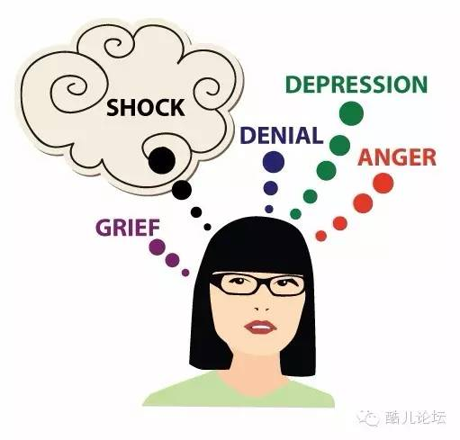
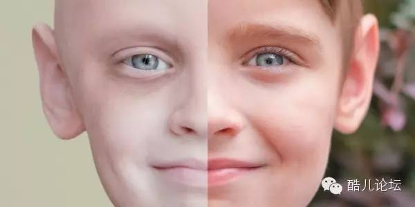
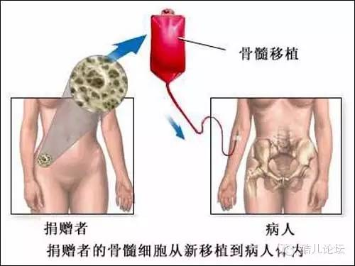
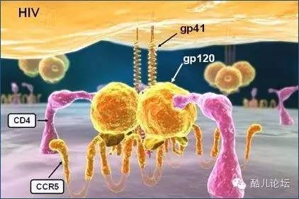
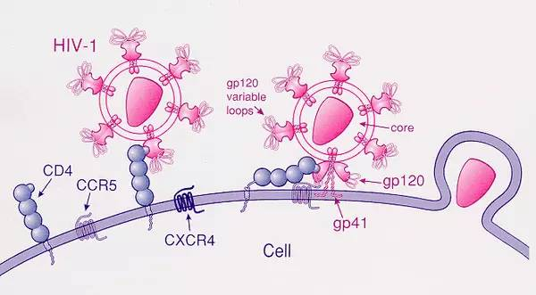
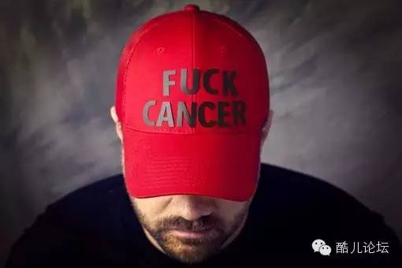
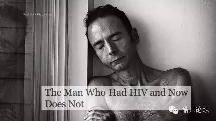
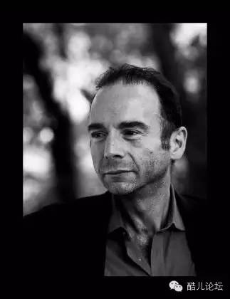
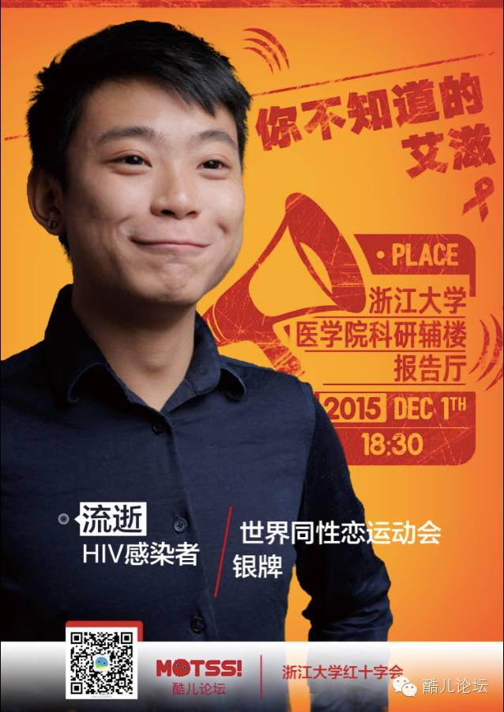

AIDS专题 | 为什么「柏林病人」的艾滋病能够治愈？
前言：作为一个医务工作者，我的初衷很简单，就是想让更多人了解艾滋，了解艾滋病人。我知道你们很想知道「柏林病人」故事的结局，但我更希望你们能通过Timothy的故事，通过「优艾」，多了解一些关于艾滋的知识。如果哪天你悄然发现周围一些朋友正受HIV的困扰，请记得还有「优艾」可以分享给他。再次感谢！
我希望你能明白什么是勇敢，一个手里握着枪的男人不是「勇敢」，真正的勇敢，是你在开始前就知道很可能会失败，但你还是去做，并且无论如何也要进行到底。
赢的几率很低，但偶尔，你还是能赢。
——Harper Lee《杀死一只反舌鸟》
老子有言：「祸兮福之所倚，福兮祸之所伏」，这句话放在Timothy Ray Brown（封面人物）身上再合适不过了。Timothy（简称『T』） ，一个居住在德国柏林的美国翻译，他更为人熟知的称号是「柏林病人」——世界上第一个，也是唯一一个被公认治愈的艾滋病人。
咱们就来讲讲这个传奇的「柏林病人」的故事，也顺便科普一下，到底为什么有且仅有Timothy的艾滋病情能被治愈？
1995年，HIV阳性
1995年3月的柏林，T刚参加完他一个同志好友的葬礼，这个朋友一年前诊断HIV阳性，在T的印象中，几乎所有圈内的诊断艾滋的朋友都过世了，他亦有所耳闻，当时的美国，艾滋病已经成为25-44岁的青壮年的首要死因。HIV确诊报告几乎就是「死亡判决书」，柏林也不例外。某一任前男友中标的消息，最终促使T前往医院检查。
你能想象人们听到自己感染艾滋时会有哪些反应么？有些人看起来像早就知道一样，有些人则表示质疑，有些人能够清楚地回忆自己是何时何地被何人感染，有些人则表现得十分震惊，反复强调「这绝对不可能」。如同每一片雪花都有各自的形状，无论是崩溃抓狂还是冷静面对，病患确诊HIV时的反应真是千差万别。

当T得知自己艾滋阳性的时候，他选择告诉每一个他认识的人，T不想保持安静，他需要他人的支持，他不想一个人面对这个消息。一次又一次地，T反复向周遭的人重复医生告诉他的坏消息。他告诉了他的老板，他的同事，当然也包括他的朋友和亲人。所有这些人当中，T第一个告诉的就是他当时的男友。男友得知后大哭着向他咆哮：「你最多只能活两年了！你完蛋了！」
2006年，确诊白血病
1996年，何大一提出「鸡尾酒疗法」，HIV感染者的寿命得以显著延长。十年之后的2006，艾滋已然成为一种可以有效控制的疾病，对Timothy而言，他不再需要担心他会因艾滋而死亡，但是命运还是没有放过他，而且这次的坏消息更糟。正如当初确诊HIV时那样，T听到医生缓慢而轻柔的告知：「你得了白血病，没有治愈的办法。」
白血病也称作「血癌」。T在2006年患上的是急性髓细胞性白血病（AML），一旦诊断这种致死性的癌症，只有不到1/4的病患能活过5年。诊断白血病对任何人来说都是沉重的打击，对于T而言，感染HIV同时又患上白血病更是雪上加霜。T和其他肿瘤病人一样担心癌症治疗的副作用，但是他也担心为了治白血病，他得中断HIV治疗，这有可能导致体内的HIV病毒再次复制，甚至耐药。在这次的「坏消息」面前，T选择了沉默。他拥有的只有阴暗狭小的病房、不离不弃的男友和医生。

医生随即安排了化疗，痛苦的检查和化疗带来的副作用让T每一次进医院都想打退堂鼓，3个疗程下来，T已经相当虚弱，但是更糟糕的是，化疗没能控制他的病情，他体内的白细胞依然疯涨。最终，T不得不面对一个极度痛苦且有可能要他命的选择——骨髓移植。
「50%的可能，你会死」
「骨髓移植」，顾名思义，就是把他人的骨髓，确切的说是骨髓里头的造血干细胞，移植给病患。骨髓造血干细胞具有多重分化潜能，可以帮助重建病患的血液系统以及免疫系统。尽管骨髓移植可能彻底清除T体内的癌细胞，但医生同时也提及了一个可怕的数字——50%的失败风险，而失败即意味着死亡。

在进行骨髓移植之前，患者往往需要进行彻底的「清髓治疗」——通过大剂量的化疗、放疗等措施把患者体内的「坏细胞」扫地出门，腾出骨髓里头的空间给即将移植进来的「好细胞」。清髓治疗在对癌细胞赶尽杀绝的同时，也会摧毁病患原有的免疫系统和造血系统。这给患者造成的打击是相当大的，在新的血液系统和免疫系统还未建立之前，患者对外界几乎没有抵抗力，一个小小的感冒就可以要他们的命。也正因为如此，不到万不得已，Timothy并不想选择骨髓移植。
除了清髓治疗可能带来的风险，骨髓移植能否成功还取决于捐献者（供体）和病患（受体）基因的匹配程度。人体内掌管免疫系统的一组基因叫做HLA，如果供体和受体的HLA基因不匹配，要么受体的免疫系统会把供体细胞当做异类杀掉，造血干细胞就无法「植活」；要么移植的造血干细胞成功存活，生成了全新的免疫系统，但这个免疫系统反客为主地把病患的其他组织器官当做敌人，疯狂攻击，产生「移植物抗宿主病」，严重情况下亦可导致死亡。
只要配型条件适合，供者可以是患者自身、亲属甚至是陌生人，造血干细胞可以从供者的髋骨中抽取或是从外周血里头浓缩，也可以从脐带血中分离得到。而移植过程，并不是像许多老百姓想的那样直接打到患者骨头里，而是类似输血，输注到患者体内的造血干细胞会自己找到适合它们生长发育的「家」。
彼之「砒霜」，吾之蜜糖
医生立即开始给Timothy找配型合适的供体。要找到一个合适的供体是很难的，有些白血病患永远也找不到合适的配型，但T是幸运的，医生给他找到了267名合适的供体！这主要归功于德国完善的骨髓捐献体制，其骨髓库记录了超过360万名志愿者信息，每年有3000多例捐献，是全欧洲最大，世界范围仅次于美国的骨髓库。相比之下，截至2011年，中华骨髓库拥有128万份HLA分型资料，共捐献2000多例。
相对充裕的供体给了Timothy的肿瘤医生大胆想象的空间——既然骨髓移植会重建T的免疫系统，HIV病毒主要存在于免疫系统当中，那是不是可以尝试一并把HIV清除了？
为了帮助大家理解这个看起来天马行空的想法，有必要铺垫一些HIV和免疫系统的知识：早在90年代初，有一小部分男同发现，无论他们和感染者发生多少次无保护性行为，他们始终保持HIV阴性，为了搞清楚这到底是为什么，其中的25人专程跑到何大一的艾滋中心自愿协助研究调查。终于，96年一份重量级的论文发表，科学家们发现这部分「HIV豁免」的男同体内存在一种基因变异——Δ32 变异！
HIV病毒之所以能够摧毁人体免疫力，是因为它能感染免疫系统中十分重要的一种细胞——CD4 T淋巴细胞。绝大多数HIV需要依靠CD4 T淋巴细胞表面的两种蛋白质才能成功入侵，其一是CD4，其二是CCR5（PS：少部分病毒的第二种蛋白是CXCR4），人体细胞只有同时表达CD4和CCR5这两种蛋白才可能被HIV病毒入侵。Δ32 变异会导致CCR5蛋白的缺失，但并不会引起明显的疾病，普通人不做专门检查根本意识不到自己携带这种「基因缺陷」，但这种「缺陷」却成为了这些男同阻止HIV感染的天然抵抗力！HIV无法入侵宿主细胞，慢慢就会被机体彻底分解清除，再不会造成伤害。

如果个体的和CCR5相关的一对基因两个位点上都发生了Δ32 变异（纯合子），那这个人终生不会感染HIV病毒。如果只有一个位点发生Δ32 变异（杂合子），少部分细胞仍然会感染HIV病毒，但是其疾病进程会大大减缓。进一步的研究发现，欧洲人种中杂合子比例高达14%，纯合子比例也有1%！
正是上面这些研究，让Timothy的肿瘤医生想到，如果能找到一个带有纯合Δ32 变异的供者，把其骨髓移植给Timothy，新生的免疫系统不就能够免于HIV病毒的侵袭了？当检测到第61名供体基因时，医生终于找到了这个难得的供体！
Timothy的血液肿瘤科医生Gero Huetter终于在骨髓库里头找到一个和T匹配且带有Δ32变异的供者。
有时候，阻碍进步的并不在于知识或是技术的欠缺
Huetter从没有想过，10年前还是医学生的他偶然间读到的一篇论文，会对他乃至整个医学界带来如此巨大的影响。正是96年这篇描述Δ32变异可以保护人体不受HIV感染的论文，促使Huetter产生通过骨髓移植来清除HIV这个大胆的想法。
那时，Huetter所在医院还没有给HIV病人实施过骨髓移植的先例。医院的管理人员否决了Huetter的提议，凭借艾滋流行早期早已过时的数据，医院高层认为，艾滋病患者死亡率相当高，给他们进行花销庞大的骨髓移植手术，即使成功，也只能延长其很短一段时间的寿命，一点都划不来。Huetter据理力争，他向医院说明，给HIV病人进行骨髓移植手术已不是新闻，HIV感染不是拒绝给患者实施骨髓移植手术的正当理由。
和管理层的抗争只是Huetter为了给Timothy实施骨髓移植遇到的众多阻碍中的第一步。毕竟，年轻的Dr.Huetter没有任何把握和依据这样做可能会成功。他把这个想法和其他经验丰富的病毒学家、肿瘤学家沟通时，得到的几乎都是否定的答复，很多同僚会觉得Huetter是功利熏心，是为了赢得少有的几个permanent faculty职位而不择手段。也许是初生牛犊不怕虎，Huetter坚信自己的猜想，为了避免其他竞争者的攻击，Huetter悄悄的进行着自己的计划，甚至，很长一段时间都没有让自己的科主任知道。
有时候，这就是一个人的战争
纸是包不住火的，当其他医生特别是感染科医生知道Huetter的计划时，不难想象反对意见会有多么强烈。反对者的主要观点是：即使没有CCR5，HIV要入侵宿主细胞，还可以依靠CXCR4（前文提到的另一种蛋白）。因此给Timothy移植Δ32变异的造血干细胞，并不能够达到阻止HIV感染的目的。不同于CCR5的是，CXCR4是一种很重要的蛋白，对于免疫细胞的生长发育至关重要，尚未发现类似Δ32这种导致CXCR4缺乏的基因变异。而且利用CXCR4入侵宿主细胞的这部分HIV病毒，致病性更强，如果给Timothy移植Δ32变异的骨髓造血干细胞，会有可能强行把致病性更强的这部分病毒筛选出来，从而让T的艾滋病情恶化。

在反对意见面前，Huetter显得极为弱势，几乎没有什么研究支持他的理论，他连一个Δ32变异可以保护机体不受HIV感染的动物实验研究都拿不出来。Huetter心里偶尔也犯嘀咕，没有动物实验会不会是因为这些动物实验都失败了呢？Huetter的核心论点毕竟不是来源于空洞的理论或是动物模型，不表达CCR5的个体确实对HIV有天然抵抗力，而此类案例少说有好几百人。
最终，Huetter把想法告诉了医院的移植中心主任，尽管这项计划的前景看起来并不乐观而且开销巨大，主任还是批准了。主任确实被眼前这个年轻人的激情打动了，他愿意给Huetter一个机会。
有时候，命运真的挺操蛋的
在Dr. Hutter的精心准备下，2007年2月6号，Timothy接受了第一次骨髓移植。医生的坚持没有白费，骨髓移植进行得十分顺利，术后T恢复得很快，移植后仅2月，T体内任何可辨别的细胞都表达了Δ32变异。更令人欣喜的是，术前T每毫升血液病毒量高达数十亿，虽然从手术当天T就中断服用抗HIV药物，但在移植后3月，T血液中再也检测不到HIV病毒了！在没有任何外界帮助的情况下，Timothy体内重建的免疫系统成功阻挡了HIV的感染，CD4T淋巴细胞等反应机体免疫力的关键指标也持续上升。这样的消息，实在太让人振奋了！
Huetter清楚现在高兴还太早了，他担心利用CXCR4的这部分HIV病毒会卷土重来。更让他担心的是T的癌症会复发。第一次骨髓移植，T的五年生存率只有25%，如果癌症复发，及时进行第二次骨髓移植，T的五年生存率也不会超过11%。
有时候，命运真的很操蛋。07年的圣诞节，Timothy的白血病复发了。即使是Huetter也觉得，这次复发对T而言真的是凶多吉少了。
这一次，Timothy还能不能挺过来？面对越来越少的生存机会，医院还会同意给Timothy进行第二次骨髓移植么？
第二次骨髓移植
前文提到，第一次骨髓移植之后，Timothy恢复得很快。他重新开始工作，有精力去健身房练肌肉，甚至再次找回旧时的兴致去调戏那些「傻白甜」的直男们。正如文章开头提及，「柏林病人」并不是土生土长的德国人，他的家人全在美国，T虽然热爱柏林这座城市，但一到节假日他还是会尽量回美探亲。07年的圣诞节，T回到美国爱达荷与亲人团聚，但节日的喜庆氛围和家人的陪伴没法掩盖T内心重新燃起的担忧——他又开始拉肚子，而且出现了肺炎的症状。
T孤单一人回到了柏林，Huetter和其同事对其进行了血液检查，检查结果考虑「白血病复发」。这一次，无论是再次化疗还是进行第二次骨髓移植，Timothy的5年存活率都只有一成左右，因此许多医生都不建议对Timothy进行二次手术。最终，还是Huetter说服了反对者。医生再次从之前那名供者身上取得宝贵的带有Δ32突变的造血干细胞，并在手术前，对T进行了更为彻底的「清髓治疗」——在原来大剂量化疗药物的基础上增加了一次全身放疗，希望能够尽可能的清除残存的癌细胞。

08年2月，Timothy接受了第二次骨髓移植。和第一次手术后的快速恢复截然相反的是，T这次手术后健康状况急转直下。不知道什么原因，T变得神志不清，眼睛看不见东西，记忆力丧失，而且几近瘫痪。一定是哪里出错了！但是医生给T做了各种各样的检查也找不出来到底是哪里出了问题。检查结果几乎都是好的，除了一点，白细胞还在不停增长。
反转，再反转
面对T每况愈下的病情，Huetter只有告知其亲属，「除非发生奇迹，Timothy只有几周好活了」。
奇迹，真的发生了！
经过Huetter和其同事的仔细分析，他们出人意料地发现，T体内那些快速分裂的细胞，这些曾被用来作为白血病复发证据的细胞，其实不是Timothy自己的！它们真正的来源竟然是给Timothy提供造血干细胞的那个供者！原来，这个精挑细选出来的骨髓供者，其实也得了白血病，只是在此之前一直没有被发现！
真是几家欢喜几家愁，这个消息对捐献骨髓的供者无疑是个打击，但对Timothy而言却是天大的好消息！因为，和HIV不同的是，癌症在人类并不会传染，这些来自别人体内的癌细胞最终会被清除，这个问题比较复杂，本文不表，总之大家记住，Timothy的白血病其实并没有复发！

而导致T二次移植骨髓后出现许多难以解释的神经系统症状的原因，其实是一次「医疗事故」——医生在给T进行大脑活检时，无意中撕裂了他的脑膜，Timothy的脑脊液通过这个小口子不断流失，脑组织也因此暴露而受到了严重损伤。
2008年应该是Timothy人生中最戏剧化的一年：他被告知白血病复发，随后进行了第二次骨髓移植，然后又被证实是「误诊」；他出现了一系列难以解释的神经系统症状，最后竟然是一次「医疗事故」导致，因此前前后后接受了三次脑部手术。经历了这一切的T，彻底失去了往日的活力，躺在病床上的他甚至没法分辨自己的左右腿，近乎「植物人」的状态。
Timothy的母亲说，「也许，这就是上帝的意愿吧。」
终于，等来了命运女神的垂青
当所有人都确信Timothy命不久矣时，T奇迹般地开始恢复！脑膜修复手术后的数周，T转入了康复病房，在医生的帮助下，他慢慢恢复了视力，也可以适度活动，一点一点，Timothy努力找回那个差点完全丢失的自己。
在Timothy坚持不懈的复健过程中，Huetter的研究小组，持续用最精密的检测办法对T的HIV病情进行检查，每一次的检测都带来了相同的结果：在没有服用抗病毒药物的条件下，Timothy体内持续检测不到HIV病毒，其CD4 T细胞也稳步上升至正常水平。
「柏林病人」的病例发表在著名的《新英格兰医学杂志》，引起了学界的广泛讨论。到2010年末，Timothy决定向公众公开自己的姓名。2012年7月，在美国华盛顿召开的世界艾滋病大会上，Timothy Ray Brown宣布建立以其名字命名的基金会，和全世界的科学家、研究机构、大学一起探寻HIV的最终治愈方法。

Timothy表示，「我不想成为这世界上唯一一个艾滋被治愈的人，我希望其他感染者也能加入我的队伍，我会用我的余生去支持HIV的治愈事业！」
这就是截至目前，这个传奇的「柏林病人」的故事。
后记：很多人留言问，「柏林病人」案例是否可以复制，骨髓移植是不是可以作为通用的治愈艾滋病的办法？
其他科学家也尝试复制「柏林病人」的案例，很可惜目前都没有成功。Timothy的案例之所以能够成功有三个关键影响因素：其一，是两次彻底的「清髓治疗」，大剂量的放、化疗可能杀死了所有携带有HIV的细胞，无论移植的骨髓是否携带Δ32变异，T的HIV病情都不会复发；其二，是T移植后出现了「移植物抗宿主病」，体内新生成的免疫系统攻击消灭了所有残存的携带有HIV的细胞；其三，就是骨髓移植本身，带有Δ32变异的淋巴细胞成功的将HIV拒之门外。但具体是哪一种因素发挥了作用，科学家们还在进行研究。
普遍运用骨髓移植来治愈HIV的想法也并不实际，毕竟骨髓移植还是一个高风险的操作，不是每个人都像Timothy一样一样幸运，接受两次骨髓移植都能化险为夷。很多接受骨髓移植的病患在「清髓治疗」这一步，会并发各种致命性感染。如果有药物可以长期控制病情，谁也不会为了潜在的治愈可能而去承担高达50%的死亡风险。也不是每个人都像Timothy一样，有条件和资源找到配型合适且携带有Δ32突变的造血干细胞供者。
不过「柏林病人」的案例确实给HIV感染者以及众多研究艾滋病的科学家带去了希望，同时也拓展了视野：一个曾经确诊即意味着死亡的绝症，因为「鸡尾酒疗法」的成功，变成了一个可以长期控制的慢性病。如今，第一个治愈病例逐渐为人们所熟知，也许下一个10年就会有更多治愈病例出现。科学的进步确实需要一定的巧合和机遇，但正如文章开头的引文所述，若有足够的勇气，「 赢的几率很低，但偶尔，你还是能赢」。
来自公众号『优艾』youaihiv
如果你希望了解更多的有关艾滋的信息，欢迎来参加流逝12月1日的讲座（无需报名）；如果你还想了解LGBTQ的相关内容，我们在讲座后（20：30）会有一个小范围的交流（需要报名）。具体信息如下：
时间
2015年12月1日18:30-20:30
地点
浙大紫金港校区
医学院科研辅楼报告厅
（人体博物馆对面）
内容
艾滋病的历史
21世纪艾滋病的防控技术及治疗技术
新旧艾滋病的对比
艾滋病常见知识的误解
BONUS
讲座结束后（8点半）
流逝将就LGBTQ话题进行小范围交流
扫下面的二维码报名：